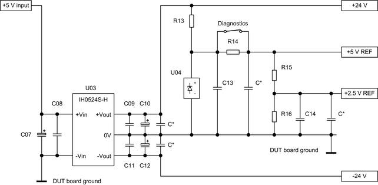

HV protection - DC supply
A dual-output DC-to-DC converter converts the +5 V input voltage to the +24 V and -24 V for the clamp regulators of the high-voltage protection. In addition, the reference voltage for the clamp regulators is provided. The supply is designed for clamp rail voltages up to ±20 V.
Circuit
The complete DC supply consists of the dual-output DC-to-DC converter, some additional capacitors and a +5 V voltage reference. The input of the DC-to-DC converter must be connected to a +5 V utility power supply on the DUT board. An optional diagnostics switch in combination with an additional resistor enables the protected channels to test the connection via the clamp diodes.

Hints for the layout
Some design rules must be considered to minimize the noise of the DC-to-DC converter and to stabilize the output voltages and the reference voltage:
- The capacitors C07 to C12 must be placed as close as possible at the converter pins.
- We recommend using additional small capacitors (C*) at the supply outputs and at the inputs of the clamp regulators to stabilize the supply voltages and the reference voltages.
Bill of materials
Reference designator |
Description |
Comment |
|---|---|---|
U03 |
IH 0524S-H, 2 W DC-to-DC converter |
One DC-to-DC converter can supply up to four pairs of clamp regulators. |
U04 |
LM4040CIM3-5.0 |
Precision micro-power shunt voltage reference provides the 5.0 V reference voltage for the clamp regulators. |
R13 |
10.0 kΩ |
Series resistance of the voltage reference; limits the total current through U04 and the resistors to about 1.9 mA. |
R14 |
4.8 kΩ |
Optional resistor for diagnostics. Is always to be implemented in combination with a normally closed diagnostics switch. |
R15, R16 |
2.4 kΩ |
Resistors for the optional voltage divider that provides a reference voltage of 2.5 V. The voltage divider is required for positive clamp voltages lower than 5.0 V. These two resistors in combination with R16 are also required to divide the reference voltages for diagnostics purpose. |
C07, C10, C12 |
47 μF |
|
C08, C09, C11 |
470 nF ceramic capacitor |
|
C13, C14 |
100 nF ceramic capacitor |
|
C* |
100 nF ceramic capacitor |
|
Diagnostics
The optional diagnostics switch in combination with R14 ... R16 is to be used to divide the reference voltages. This will enable the protected channels to check the connection via the clamp diodes, the lowered clamp rails, the FETs of the regulators to DUT board ground using the own resources.
A normally closed switch is to be used for the diagnostics functionality. The switch is to be controlled by a utility line or another adequate control signal. Resistors R15 and R16 are always to be implemented for diagnostics even if the 2.5 V reference voltage is not required.
Functional changes
- Introduced in SmarTest 7.3.1
- SmarTest 7.4.3: Protection circuitry optimized and diagnostics relay added.